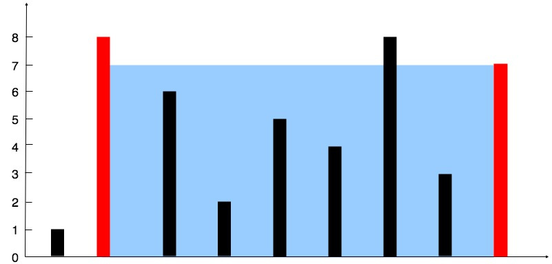

Given n non-negative integers a1, a2, ..., an , where each ai represents a point at coordinate (i, ai), n vertical lines are drawn such that the two endpoints of line i is at (i, ai) and (i, 0). Find two lines, which together with x-axis forms a container, such that the container contains the most water.
Note: You may not slant the container and n is at least 2.
Input: [1,8,6,2,5,4,8,3,7]
Output: 49